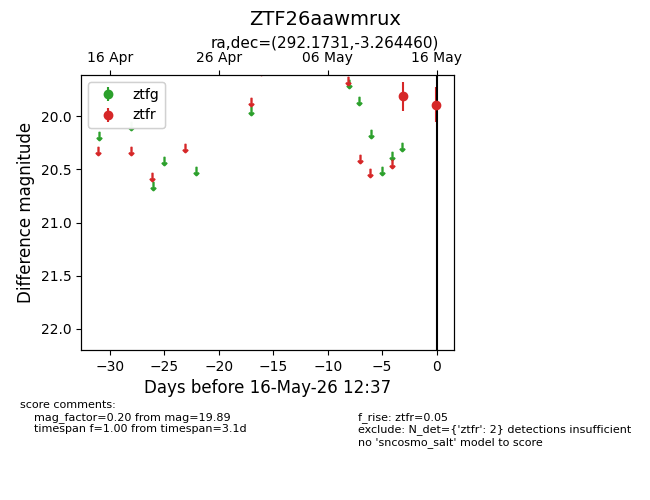
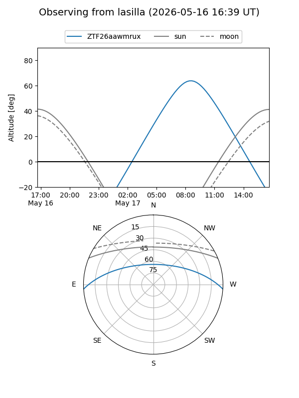
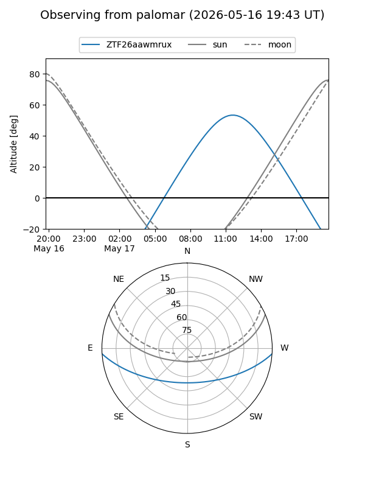
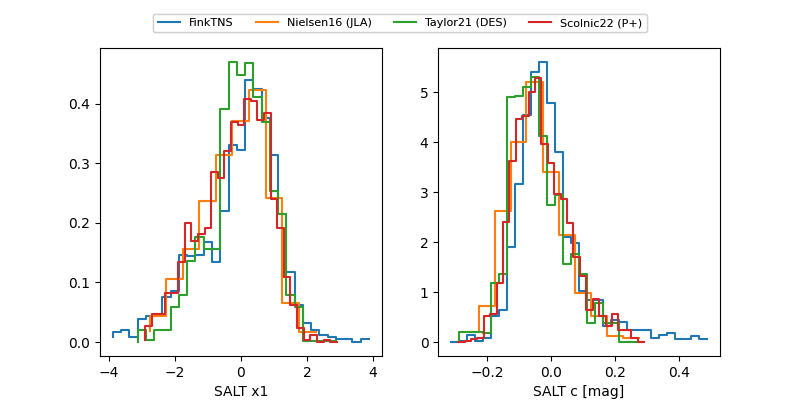

ZTF26aawmrux
Target ZTF26aawmrux at 2026-05-16 12:39
Aliases and brokers:
FINK: link
Lasair: link
ALeRCE: link
alt names
ZTF26aawmrux (ztf,fink_ztf)
Coordinates:
equatorial (ra, dec) = 292.1731,-3.26446
equatorial (HMS+DMS) = 19:28:41.53,-03:15:52.05
galactic (l, b) = (34.2690,-9.77420)
Flags:
Photometry:
last ztfr=19.89
2 ztfr detections
Lightcurve

Visibility


Additional plots
